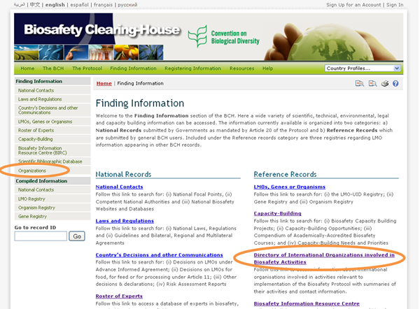
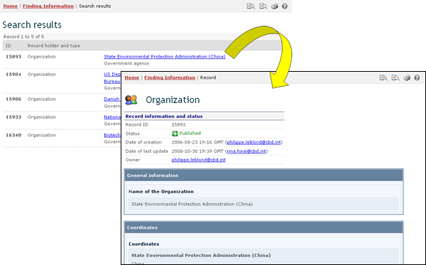

URL: http://bch.cbd.int/database/organizations/
The worldwide and multidisciplinary nature of the Protocol provides a wide stakeholder base for its implementation, extending beyond its Parties. Accordingly, the BCH maintains a database of organizations that are involved in biosafety-related issues.
The search page for information about Organizations can be accessed from the Finding Information drop down menu on the navigation bar, or from the link in the left-hand menu of the Finding Information page or from the Directory of International Organizations involved in Biosafety Activities link in the text of that page.

This search page allows users to access information about organizations involved in biosafety and includes summaries of the activities of these organizations and their contact information.
On the Search for Organizations involved in Biosafety Activities page are several search criteria boxes:
-
Country: Selection list field for selecting a country
-
Region: Selection list field for selecting a region
-
Organization name: Keyword field for searching by organization name
-
Contact name: Keyword field for searching by organizacion contact
-
Type of organization: Selection list to narrow search results to organization of the specified types
-
Date of record: Date field for narrowing the search results to a time interval
-
Keyword search: Keyword field for narrowing the results by keyword
See "Using the search pages" to learn about types of fields and their operation.

Example: A user wishes to identify government organizations that work with farmers. The user: (i) selects Government agency in the Type of organization box and (ii) types farmer OR agriculture into the Keyword search box. The results indicate a number of organizations.


This picture was taken on February 2010 with the only purpose of providing an example on the usage of the BCH.
To change the search to projects linked to the private sector, the user selects Private sector (business and industry) in the type of organization box.

This picture was taken on February 2010 with the only purpose of providing an example on the usage of the BCH.